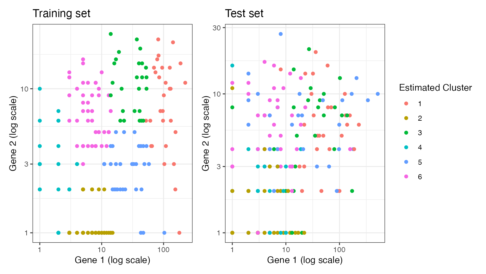
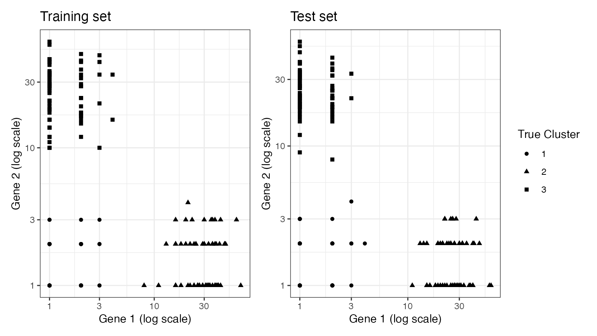

Tutorial: cross-validation for single cell RNA-seq data via count splitting
MSE_tutorial.RmdIn this tutorial, we use simple simulated datasets to show how to use count splitting to do cross-validation for unsupervised learning. Make sure that the packages below are installed, and then proceed with loading the packages.
Note that this tutorial assumes basic familiarity with the methodology described in our paper.
We start by generating simple data from a negative binomial distribution. The data has three true clusters \((K^*=3)\). We generate data with only two genes (\(p=2\)) so that we can visualize the clusters more easily. Throughout this document, our goal is to estimate the true number of clusters \(K^*\).
library(tidyverse)
set.seed(1)
n=200
p=2
lambda <- matrix(exp(2.5), nrow=n, ncol=p, byrow = TRUE)
clusters <- sample(1:3, size=n, replace=TRUE)
lambda[clusters==2,1] <- exp(5)
lambda[clusters==3,2] <- exp(0.1)
true.overdisps <- c(3,6)
X <- sapply(1:p, function(u) rnbinom(length(lambda[,u]), mu=lambda[,u], size= true.overdisps[u]))
ggplot(data=NULL, aes(x=X[,1]+1, y=X[,2]+1, col=as.factor(clusters)))+
geom_point()+
scale_x_log10()+
scale_y_log10()+
theme_bw()+
labs(col="True Cluster")+
xlab("Gene 1 (log scale)")+ ylab("Gene 2 (log scale)")
Naive method
In order to estimate \(K^*\), we try out models with different numbers of clusters \(k\) ranging from \(1\) to \(10\), so as to see which model best fits the observed data. Unfortunately, if we estimate the clusters and evaluate the clusters on the same data, models with more clusters (i.e. more complexity) will always appear better. Thus, our loss function curve decreases monotonically with the number of clusters, and we cannot simply pick the value of \(k\) that minimizes the loss function. We demonstrate this issue below.
We will use within-cluster sum of squared errors (SSE) as our loss function. We implement this loss function here. Note that the within-cluster SSE is computed on a log scale. Please note that, when you are evaluating real scRNA-seq data, you should think carefully about your choice of loss function (i.e. you may want to apply your loss function to the size-factor-normalized data rather than the raw data, and you may want to only apply the loss function to the “highly variable genes”).
cluster.sse <- function(trainDat, testDat, clusters.est, eps.train) {
totSS <- 0
for (lab in unique(clusters.est)) {
if (sum(clusters.est==lab) > 1) {
clustdat.test <- testDat[clusters.est==lab,]
clustdat.train <- trainDat[clusters.est==lab,]
colmeansTrain <- colMeans(clustdat.train)
pred.means <- (1-eps.train)/eps.train*colmeansTrain
ss <- rowSums((log1p(t(clustdat.test/(1))) - log1p(pred.means))^2)
totSS <- totSS+sum(ss)
}
}
return(totSS)
}We first consider the naive method, which estimates clusters using
all of the data, and then computes the SSE using all of the data. In the
context of the function above, this means that
trainDat=testDat=X.
set.seed(2)
naive.res <- rep(NA, 10)
for (k in 1:10) {
clusters.est <- kmeans(log(X+1), centers=k)$cluster
naive.res[k] <- cluster.sse(X,X,clusters.est, 0.5)
}
naive.res
## [1] 741.49334 281.24586 145.88709 116.59458 100.36263 85.34198 79.63901
## [8] 66.73098 52.93768 52.83475We normalize the SSE results such that they lie between \(0\) and \(1\). This will later facilitate comparisons between methods. We then plot the results. As expected, this naive method leads to a within-cluster SSE that decreases monotonically with \(k\), and thus leaves no clear strategy for estimating \(K^*\).
naive.res.norm <- (naive.res - min(naive.res))/(max(naive.res)-min(naive.res))
ggplot(data=NULL)+
geom_pointline(aes(x=1:10, y=naive.res.norm, col="Naive"))+
theme_bw()+
ylab("Within-cluster SSE")+
xlab("Number of cluster (k)")+
geom_vline(aes(xintercept=3))+
labs(col="Method")+
scale_x_continuous(breaks=0:11)Count splitting (two folds)
Splitting our data into a training set and a test set can help us avoid this issue. We first consider Poisson count splitting. We note that, since the data are not actually Poisson distributed, we do not expect Poisson count splitting to solve our problem.
set.seed(5)
poisSplit <- countsplit(X)
Xtrain.pois <- poisSplit[[1]]
Xtest.pois <- poisSplit[[2]]
pois.res <- rep(NA, 10)
for (k in 1:10) {
clusters.est <- kmeans(log(Xtrain.pois+1), centers=k)$cluster
pois.res[k] <- cluster.sse(Xtrain.pois,Xtest.pois,clusters.est, 0.5)
}
pois.res.norm <- (pois.res - min(pois.res))/(max(pois.res)-min(pois.res))
ggplot(data=NULL)+
geom_pointline(aes(x=1:10, y=naive.res.norm, col="Naive"))+
geom_pointline(aes(x=1:10, y=pois.res.norm, col="Poisson count splitting"))+
theme_bw()+
ylab("Within-cluster SSE")+
xlab("Number of cluster (k)")+
geom_vline(aes(xintercept=3))+
labs(col="Method")+
scale_x_continuous(breaks=0:11)+
theme_bw() As expected, the loss function under Poisson count splitting is still
monotonically decreasing in \(k\).
As expected, the loss function under Poisson count splitting is still
monotonically decreasing in \(k\).
If we knew the true value of the overdispersion parameters that generated our data, we could solve this problem by applying negative binomial count splitting with these known values. For this simulated dataset, we do know the true values, and so we can consider this option. We see that, unlike the other two options, negative binomial count splitting leads to a loss function that is actually minimized at \(k=3\), which means that we correctly estimate \(K^*\).
set.seed(3)
knownSplit <- countsplit(X, overdisps=true.overdisps)
Xtrain.known <- knownSplit[[1]]
Xtest.known <- knownSplit[[2]]
known.res <- rep(NA, 10)
for (k in 1:10) {
clusters.est <- kmeans(log(Xtrain.known+1), centers=k)$cluster
known.res[k] <- cluster.sse(Xtrain.known,Xtest.known,clusters.est, 0.5)
}
known.res.norm <- (known.res - min(known.res))/(max(known.res)-min(known.res))
ggplot(data=NULL)+
geom_pointline(aes(x=1:10, y=naive.res.norm, col="Naive"))+
geom_pointline(aes(x=1:10, y=pois.res.norm, col="Poisson count splitting"))+
geom_pointline(aes(x=1:10, y=known.res.norm, col="NB count splitting"))+
geom_vline(xintercept=3)+
theme_bw()+
ylab("Within-cluster SSE")+
xlab("Number of cluster (k)")+
geom_vline(aes(xintercept=3))+
labs(col="Method")+
scale_x_continuous(breaks=0:11)+
theme(legend.text = element_text(size=10))+
theme_bw()
In reality, we would need to use estimated values for the
overdispersion parameters. In this toy setting with only two genes,
estimating the overdispersion parameters will be difficult. For large
datasets, packages such as sctransform obtain reasonable
estimates of overdispersion parameters by making use of the fact that
most genes tend to be null (not differentially expressed across any
cells) and that genes with similar average expression levels have
similar overdispersion parameters. We will explore the matter of
estimated overdispersion parameters in future tutorials.
In this small setting, we do not obtain a very good estimate of the overdisperion parameters if we fit a negative binomial GLM with only an intercept to each gene. We estimate 0.6 and 1.0, whereas the true values are 3 and 6.
overdisps.hat <- apply(X,2, function(u) summary(MASS::glm.nb(u~1))$theta)
overdisps.hat
## [1] 0.649406 1.008034
true.overdisps
## [1] 3 6We can briefly explore the performance of NBCS with estimated values of the overdispersion, even though in this case we know that our estimates are poor. We see that the poor overdispersion estimates introduced too much noise into our dataset, falsely suggesting that there is only one true cluster in the data.
set.seed(3)
estSplit <- countsplit(X, overdisps=overdisps.hat)
Xtrain.est <- estSplit[[1]]
Xtest.est <- estSplit[[2]]
est.res <- rep(NA, 10)
for (k in 1:10) {
clusters.est <- kmeans(log(Xtrain.est+1), centers=k)$cluster
est.res[k] <- cluster.sse(Xtrain.est,Xtest.est,clusters.est, 0.5)
}
est.res.norm <- (est.res - min(est.res))/(max(est.res)-min(est.res))
ggplot(data=NULL)+
geom_pointline(aes(x=1:10, y=naive.res.norm, col="Naive"))+
geom_pointline(aes(x=1:10, y=pois.res.norm, col="Poisson count splitting"))+
geom_pointline(aes(x=1:10, y=known.res.norm, col="NB count splitting"))+
geom_pointline(aes(x=1:10, y=est.res.norm, col="NB count splitting (estimated)"))+
geom_vline(xintercept=3)+
theme_bw()+
ylab("Within-cluster SSE")+
xlab("Number of cluster (k)")+
geom_vline(aes(xintercept=3))+
labs(col="Method")+
scale_x_continuous(breaks=0:11)+
theme(legend.text = element_text(size=10))+
theme_bw()We briefly repeat the work from above, but on a dataset with 1000
genes. In this setting, we are able to use sctransform to
obtain better estimates of the overdispersion parameters, and therefore
obtain better
Cross validation via count splitting
We can improve on the previous analysis by replacing a single train/test split with cross validation. We do this in the negative binomial setting, as this is the correct setting for this analysis.
We first create five identically distributed folds of data.
set.seed(10)
folds <- 5
partition.known <- countsplit(X, folds=folds, overdisps=true.overdisps)We know loop through each fold of data. For each fold, we estimate clusters on all the data that are not in that fold, and we evaluate the MSE using the held out fold.
knownRes <- matrix(NA, nrow=folds, ncol=10)
for (fold in 1:folds) {
testDat <- partition.known[[fold]]
trainDat <- X - testDat
for (j in 1:10) {
clusters.train <- kmeans(log(trainDat+1), centers=j, nstart=10)$cluster
knownRes[fold,j] <- cluster.sse(trainDat, testDat, clusters.train, 1-1/folds)
}
}The total score for each attempted number of clusters (\(k\)) is taken to be the average MSE across the 5 folds. We once again normalize to facilitate comparison with other methods.
MSEs <- colMeans(knownRes)
MSEs.norm <- (MSEs-min(MSEs))/(max(MSEs)-min(MSEs))
ggplot(data=NULL)+
geom_pointline(aes(x=1:10, y=naive.res.norm, col="Naive"))+
geom_pointline(aes(x=1:10, y=pois.res.norm, col="Poisson count splitting"))+
geom_pointline(aes(x=1:10, y=known.res.norm, col="NB count splitting"))+
geom_pointline(aes(x=1:10, y=MSEs.norm, col="NB cross validation"))+
geom_vline(xintercept=3)+
theme_bw()+
ylab("Within-cluster SSE")+
xlab("Number of cluster (k)")+
geom_vline(aes(xintercept=3))+
labs(col="Method")+
scale_x_continuous(breaks=0:11)+
theme(legend.text = element_text(size=10))+
theme_bw()
Looking at the results, we can see that NB cross validation also leads to a loss function that is minimized at the correct number of clusters. Across many repeated trials, we expect NB cross validation to select the correct number of clusters more often than NB count splitting, as aggregating the loss function across folds helps reduce the variance of the loss function.
Visualizing what is going on
A nice thing about working with data in two dimensions is that we can visualize our data along with either the true clusters or the estimated clusters. We start by plotting our training set and our test set, with the shape of the points representing the true cluster assignments. We can see that both the training set and the test set are grouped in space according to their true cluster values. Thus, we will be able to get reasonable estimates of the true clusters using the training set, and evaluate these estimates well using the test set.
p1 <- ggplot(data=NULL, aes(x=Xtrain.known[,1]+1, y=Xtrain.known[,2]+1, pch=as.factor(clusters)))+
geom_point()+
scale_x_log10()+
scale_y_log10()+
theme_bw()+
labs(shape="True Cluster")+
xlab("Gene 1 (log scale)")+ ylab("Gene 2 (log scale)")+
ggtitle("Training set")
p2 <- ggplot(data=NULL, aes(x=Xtest.known[,1]+1, y=Xtest.known[,2]+1, pch=as.factor(clusters)))+
geom_point()+
scale_x_log10()+
scale_y_log10()+
theme_bw()+
labs(shape="True Cluster")+
xlab("Gene 1 (log scale)")+ ylab("Gene 2 (log scale)")+
ggtitle("Test set")
p1+p2+plot_layout(guides="collect")We now move on to estimating clusters. Here, we see that when we estimate \(k=3\) clusters on the training set, these cluster labels are still arranged according to location in space on the test set. This is becauase the \(k=3\) estimated clusters are capturing true signal (differences in mean) rather than random noise. This true signal exists in both the training set and the test set.
estimated.clusters.3 <- kmeans(log(Xtrain.known+1), 3)$cluster
p3 <- ggplot(data=NULL, aes(x=Xtrain.known[,1]+1, y=Xtrain.known[,2]+1, col=as.factor(estimated.clusters.3)))+
geom_point()+
scale_x_log10()+
scale_y_log10()+
theme_bw()+
labs(col="Estimated Cluster")+
xlab("Gene 1 (log scale)")+ ylab("Gene 2 (log scale)")+
ggtitle("Training set")
p4 <- ggplot(data=NULL, aes(x=Xtest.known[,1]+1, y=Xtest.known[,2]+1, col=as.factor(estimated.clusters.3)))+
geom_point()+
scale_x_log10()+
scale_y_log10()+
theme_bw()+
labs(col="Estimated Cluster")+
xlab("Gene 1 (log scale)")+ ylab("Gene 2 (log scale)")+
ggtitle("Test set")
p3+p4+plot_layout(guides="collect")Suppose that we estimate \(k=6\) clusters on the training set. While the clusters are distributed according to location in space on the training set, these cluster labels are not well separated in space when applied to the test set. This is because we estimated too many clusters, and so some of the differences seen in the training set were the result of random noise rather than true signal. This will lead to poor performance metrics on the test set, which is what we want, since \(k=6\) was an incorrect guess.
estimated.clusters.6 <- kmeans(log(Xtrain.known+1), 6)$cluster
p5 <- ggplot(data=NULL, aes(x=Xtrain.known[,1]+1, y=Xtrain.known[,2]+1, col=as.factor(estimated.clusters.6)))+
geom_point()+
scale_x_log10()+
scale_y_log10()+
theme_bw()+
labs(col="Estimated Cluster")+
xlab("Gene 1 (log scale)")+ ylab("Gene 2 (log scale)")+
ggtitle("Training set")
p6 <- ggplot(data=NULL, aes(x=Xtest.known[,1]+1, y=Xtest.known[,2]+1, col=as.factor(estimated.clusters.6)))+
geom_point()+
scale_x_log10()+
scale_y_log10()+
theme_bw()+
labs(col="Estimated Cluster")+
xlab("Gene 1 (log scale)")+ ylab("Gene 2 (log scale)")+
ggtitle("Test set")
p5+p6+plot_layout(guides="collect")
An alternate validation metric
Rather than evaluate our clusters based on within-cluster mean-squared-error, we can consider evaluating our clusters based on their stability. This idea will work best when the true clusters are well-separated and not nested within each-other.
To gain intuition for this idea, consider the following example dataset. It is similar to the dataset above, but the signal strength is stronger such that the clusters are well-separated in log-space.
set.seed(111)
n=200
p=2
lambda <- matrix(1, nrow=n, ncol=p)
clusters <- sample(1:3, size=n, replace=TRUE)
lambda[clusters==2,1] <- lambda[clusters==2,1]*exp(4)
lambda[clusters==3,2] <- lambda[clusters==3,2]*exp(4)
true.overdisps <- c(20,20)
X <- sapply(1:p, function(u) rnbinom(length(lambda[,u]), mu=lambda[,u], size= true.overdisps[u]))
ggplot(data=NULL, aes(x=X[,1]+1, y=X[,2]+1, pch=as.factor(clusters)))+
geom_point()+
theme_bw()+
scale_x_log10()+
scale_y_log10()+
labs(col="True Cluster")+
xlab("Gene 1 (log scale)")+ ylab("Gene 2 (log scale)")Suppose that we split this data into a training set and a test set. In this section, we will do negative binomial count splitting using the true value of the overdipsersion parameter.
set.seed(222)
knownSplit <- countsplit(X, overdisps=true.overdisps)
Xtrain.known <- knownSplit[[1]]
Xtest.known <- knownSplit[[2]]
p1 <- ggplot(data=NULL, aes(x=Xtrain.known[,1]+1, y=Xtrain.known[,2]+1, pch=as.factor(clusters)))+
geom_point()+
scale_x_log10()+
scale_y_log10()+
theme_bw()+
labs(shape="True Cluster")+
xlab("Gene 1 (log scale)")+ ylab("Gene 2 (log scale)")+
ggtitle("Training set")
p2 <- ggplot(data=NULL, aes(x=Xtest.known[,1]+1, y=Xtest.known[,2]+1, pch=as.factor(clusters)))+
geom_point()+
scale_x_log10()+
scale_y_log10()+
theme_bw()+
labs(shape="True Cluster")+
xlab("Gene 1 (log scale)")+ ylab("Gene 2 (log scale)")+
ggtitle("Test set")
p1+p2+plot_layout(guides="collect")
If we estimate three clusters on the training set and also estimate three clusters on the test set, the resulting clusterings should be very similar to one another because they are capturing true signal, not random noise. Here. the adjusted Rand Index tells us that the training clusters and the test clusters match perfectly (the adjusted Rand Index is 1).
set.seed(333)
clusters.est.train <- kmeans(log(Xtrain.known+1), centers=3)$cluster
clusters.est.test <- kmeans(log(Xtest.known+1), centers=3)$cluster
mclust::adjustedRandIndex(clusters.est.train,clusters.est.test)
## [1] 1On the other hand, if we estimate either two clusters or four clusters, there will be less similarity, because random noise will be responsible for determining either the merged clusters (when we only estimate two) or the extra cluster (when we estimate four).
We can see that the adjusted Rand Indices are lower in each of these cases.
set.seed(444)
clusters.est.train <- kmeans(log(Xtrain.known+1), centers=2)$cluster
clusters.est.test <- kmeans(log(Xtest.known+1), centers=2)$cluster
mclust::adjustedRandIndex(clusters.est.train,clusters.est.test)
## [1] 0.1249398
set.seed(5)
clusters.est.train <- kmeans(log(Xtrain.known+1), centers=4)$cluster
clusters.est.test <- kmeans(log(Xtest.known+1), centers=4)$cluster
mclust::adjustedRandIndex(clusters.est.train,clusters.est.test)
## [1] 0.8367007We can visualize the results for four clusters, and can see that, even though the adjusted Rand Index is quite high, there is evidence of over-clustering in the data. We plot both sets of clusters overlaid with the training set counts, so that the two plots are comparable. While the red and the green clusters are perfectly reproruced between the training and the test set, the purple and blue clusters are not reproduclble, suggesting that they should be merged.
p1 <- ggplot(data=NULL, aes(x=Xtrain.known[,1]+1, y=Xtrain.known[,2]+1, col=as.factor(clusters.est.train)))+geom_point()+ggtitle("Clusters estimated with training set", "plotted on training set")
p2 <- ggplot(data=NULL, aes(x=Xtrain.known[,1]+1, y=Xtrain.known[,2]+1, col=as.factor(clusters.est.test)))+geom_point()+ggtitle("Clusters estimated with test set", "plotted on training set")
p1+p2 & guides(col=F) & theme_bw() & xlab("Xtrain1") & ylab("Xtrain2") & scale_y_log10() & scale_x_log10()
If we repeat this process across 100 random splits, the adjusted Rand Index is consistently maximized at \(3\), which is the correct number of clusters.
stability.res <- matrix(NA, nrow=100, ncol=9)
for (t in 1:100) {
set.seed(t)
knownSplit <- countsplit(X, overdisps=true.overdisps)
Xtrain.known <- knownSplit[[1]]
Xtest.known <- knownSplit[[2]]
for (k in 2:10) {
clusters.est.train <- kmeans(log(Xtrain.known+1), centers=k)$cluster
clusters.est.test <- kmeans(log(Xtest.known+1), centers=k)$cluster
stability.res[t,k-1] <- mclust::adjustedRandIndex(clusters.est.train,clusters.est.test)
}
}
ggplot(data=NULL)+
geom_pointline(aes(x=2:10, y=colMeans(stability.res), col="NB count splitting"))+
geom_vline(xintercept=3)+
theme_bw()+
ylab("Adjusted Rand Index")+
xlab("Number of cluster (k)")+
geom_vline(aes(xintercept=3))+
labs(col="Method")+
ggtitle("Results across 100 random splits")+
theme(legend.text = element_text(size=10))+
theme_bw()While stability-based evaluation metrics show a lot of promise for evaluating clusters on real scRNA-seq data, we must be cautious. The results above are extremely clean because the true clusters are well-separated and are not nested within one another. Any time that the true clusters are nested within one another, we cannot expect the adjusted Rand Index to be consistently maximized at the ``correct” number of clusters: the adjusted Rand Index will be high when we are estimating either the outer clusters or the inner nested clusters.
However, these metrics can still be useful even when they are not maximized at the “correct” number of clusters, because they are interpretable, and we can also visualize the results by plotting our training set and test set clusters together, as above.